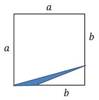

Różne zadania z wyrażeń algebraicznych
Równość
\((a+2\sqrt{2})^2=a^2+28\sqrt{2}+8\) zachodzi dla
A.\( a=14 \)
B.\( a=7\sqrt{2} \)
C.\( a=7 \)
D.\( a=2\sqrt{2} \)
C
Jeżeli \(a = \frac{1}{2}\), \(b = 3 + \sqrt{2}\), \(c = 4 - \sqrt{2}\), to ile
wynosi wartość wyrażenia \(\frac{b-2c}{a}\)?
\(-10+6\sqrt{2}\)
Zbiór
\(\mathbb{R} \backslash \{-3, 0, 2\}\) jest
dziedziną wyrażenia
A.\( \frac{x^2+3x+1}{x^2+x-6} \)
B.\( \frac{x^2-x-2}{x^3+5x^2+6x} \)
C.\( \frac{3x+2}{x(x-2)(x-3)} \)
D.\( \frac{2x+2}{x(x-2)(x+3)} \)
D
Wyrażenie \(\left ( x\sqrt{2}+2x\sqrt{8} \right )^2\) jest równe
A.\( 18x^2 \)
B.\( -16x^2 \)
C.\( 50x^2 \)
D.\( 42x^2 \)
C
Które liczby ze zbioru
\(\{-3, -2, -1, 0, 1, 2, 3\}\)
nie należą do dziedziny poniższego wyrażenia wymiernego: \[\frac{x^2+x-5}{x^3-9x}\]
A.\( 0,9 \)
B.\( -2,-1,1,2 \)
C.\( -3,-1,1,3 \)
D.\( -3,0,3 \)
D
Dla każdej liczby rzeczywistej \(x\) wyrażenie \((3x-2)^2-(2x-3)(2x+3)\) jest po
uproszczeniu równe
A.\( 5x^2-12x-5 \)
B.\( 5x^2-13 \)
C.\( 5x^2-12x+13 \)
D.\( 5x^2+5 \)
Przedstawieniem wyrażenia \(4 - x^2 + 2xy - y^2\) w postaci iloczynu jest
A.\( ((x-y)-2)((x-y)+2) \)
B.\( ((x-y)-2)^2 \)
C.\( -((x-y)-2)((x-y)+2) \)
D.\( ((x-y)+2)^2 \)
C
Wyrażenie
\((x-2y)(x^2+2xy+4y^2)\) jest równe
A.\( (x-2y)^3 \)
B.\( x^3+8y^3 \)
C.\( x^3-8y^3 \)
D.\( (x+2y)^3 \)
C
Po skróceniu ułamek
\(\frac{2x^2-4x}{x-2}\) dla
\(x \ne 2\) jest równy
A.\( 2x^2-2 \)
B.\( 2x \)
C.\( x^2-2 \)
D.\( x-2 \)
B
Para liczb \((x,y)\), która spełnia równanie
\(x^2-2xy+y^2=25\), to
A.\( (-1,1) \)
B.\( (3,2) \)
C.\( (-3,-2) \)
D.\( (0,5) \)
D
Niech \(x+y=12\) i \(x^2+y^2=126\). Oblicz wartość wyrażenia \(x\cdot
y\).
\(9\)
Rozłóż na czynniki możliwie najniższego stopnia, wielomian: \(x^3+2x^2-9x-18\).
\((x+2)(x-3)(x+3)\)
Zapisz w postaci wyrażenia algebraicznego pole zaznaczonego obszaru. 
\(\frac{1}{2}(a-b)^2\)
Jeden z boków prostokąta jest o \(2\) cm krótszy, a drugi o \(2\) cm dłuższy od
boku pewnego kwadratu. Który z czworokątów ma większe pole i o ile większe?
Kwadrat ma większe pole o \(4\)
Wyrażenie \(5a^2-10ab+15a\) jest równe iloczynowi
A.\( 5a^2(1-10b+3) \)
B.\( 5a(a-2b+3) \)
C.\( 5a(a-10b+15) \)
D.\( 5(a-2b+3) \)
B
Niech
\(k = 2 - 3\sqrt{2}\), zaś
\(m = 1 - \sqrt{2}\). Wówczas wartość wyrażenia
\(k^2 - 12m\) jest równa:
A.\( 21+12\sqrt{2} \)
B.\( 21-12\sqrt{2} \)
C.\( 10 \)
D.\( 34 \)
C
Jeśli \( a=\frac{b}{c-b} \), to
A.\(b=\frac{a+1}{a\cdot c} \)
B.\(b=\frac{a\cdot c}{a+1} \)
C.\(b=\frac{a\cdot c}{a-1} \)
D.\(b=\frac{a-1}{a\cdot c} \)
B
Wyrażenie \( (3x+1+y)^2 \) jest równe
A.\(3x^2+y^2+1\)
B.\(9x^2+6x+y^2+1\)
C.\(3x^2+y^2+6xy+6x+1\)
D.\(9x^2+y^2+6xy+6x+2y+1\)
D
Wartość wyrażenia \((a+5)^2\) jest większa od wartości wyrażenia \((a^2+10a)\) o
A.\( 50 \)
B.\( 10 \)
C.\( 5 \)
D.\( 25 \)
D